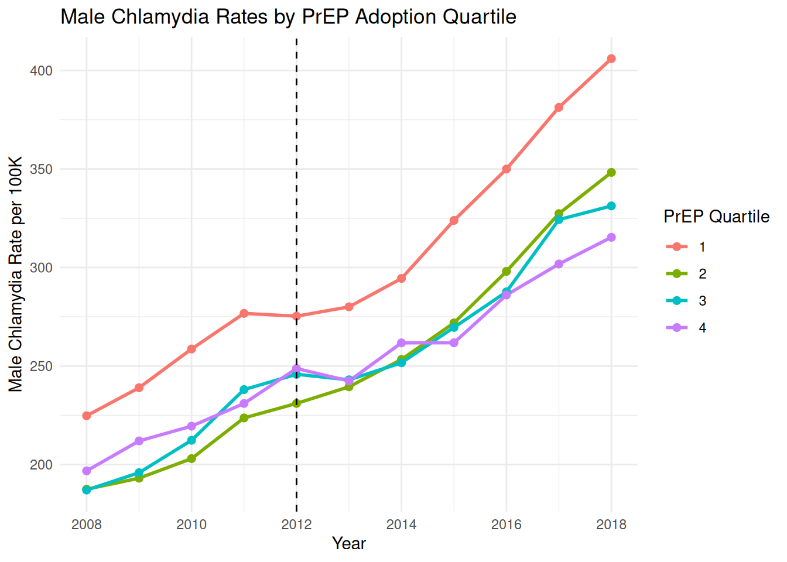
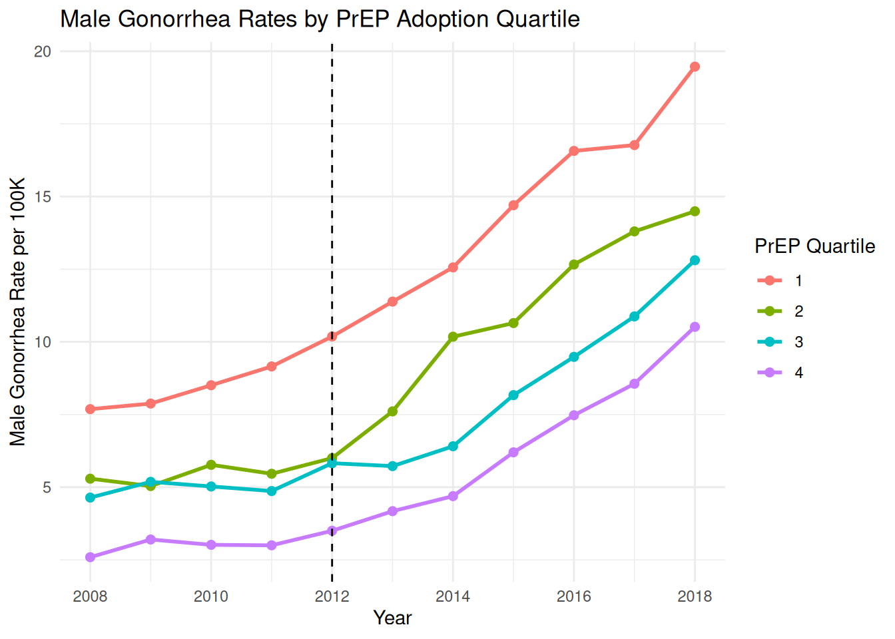
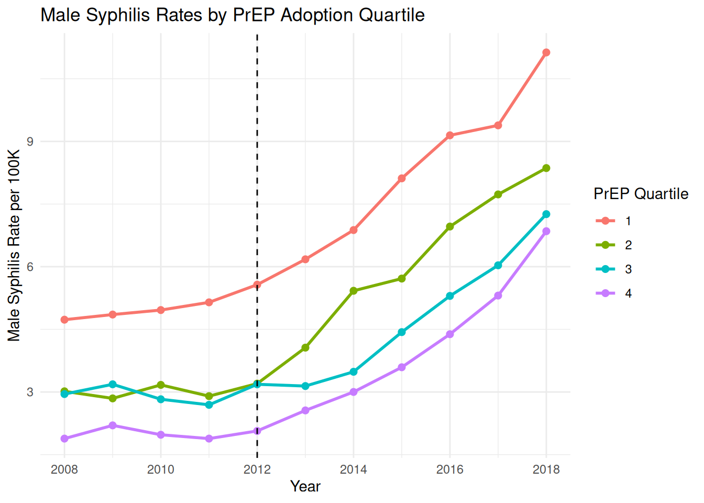
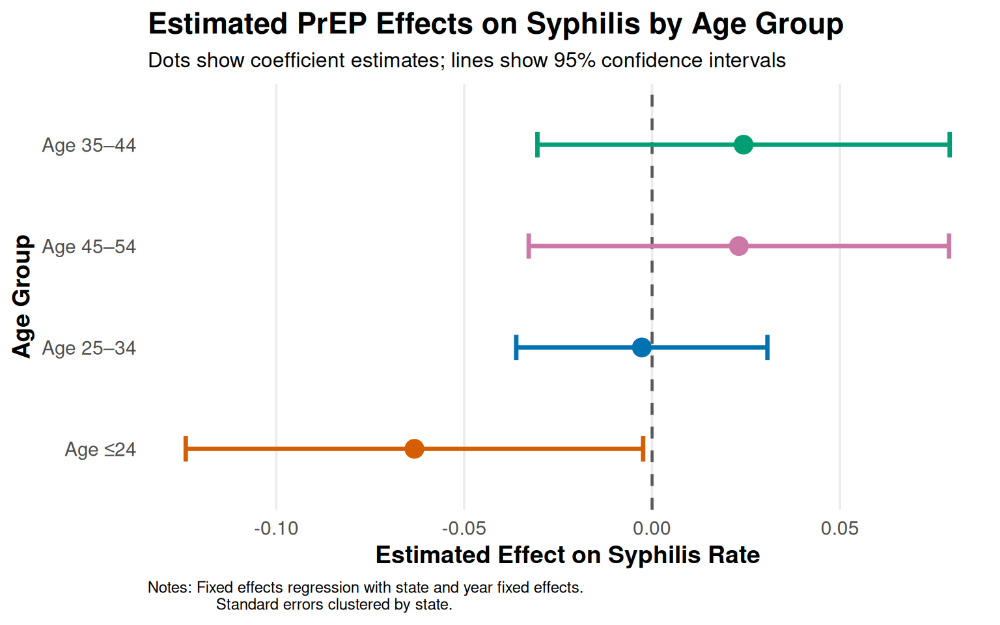

| Chlamydia (M) | Chlamydia (F) | Gonorrhea (M) | Gonorrhea (F) | Syphilis (M) | Syphilis (F) | |
|---|---|---|---|---|---|---|
| + p < 0.1, * p < 0.05, ** p < 0.01, *** p < 0.001 | ||||||
| Standard errors clustered at state level. All models include state and year fixed effects. | ||||||
| male_prep_rate | 0.414*** | 0.015* | 0.007 | |||
| (0.064) | (0.007) | (0.005) | ||||
| female_prep_rate | 1.335 | -0.617 | -0.025 | |||
| (1.225) | (0.996) | (0.024) | ||||
| Num.Obs. | 348 | 342 | 348 | 342 | 348 | 342 |
| R2 | 0.948 | 0.961 | 0.878 | 0.925 | 0.861 | 0.724 |
| R2 Adj. | 0.938 | 0.953 | 0.854 | 0.910 | 0.835 | 0.669 |
| R2 Within | 0.217 | 0.008 | 0.021 | 0.006 | 0.011 | 0.004 |
| FE: state | X | X | X | X | X | X |
| FE: year | X | X | X | X | X | X |
PrEP and Moral Hazard: Replication and Extension
Applied Econometrics I – ECON 6103-002
1. Introduction
Eilam and Delhommer (2021) examine whether the introduction of PrEP, a drug approved in 2012 that effectively eliminates the risk of contracting HIV, led to increases in other sexually transmitted infections through moral hazard. The central idea is that PrEP acts like insurance against HIV, the most serious risk associated with unprotected sex, and by removing that risk, may have encouraged users to engage in riskier sexual behavior. Since PrEP was adopted primarily by gay men, the authors exploit cross-state variation in gay population size as a measure of exposure to PrEP, comparing STI trends before and after 2012 in states with larger versus smaller gay populations. Using difference-in-differences and triple-difference methods, they find that PrEP significantly increased male chlamydia, gonorrhea, and syphilis rates. Their estimates suggest that each additional male PrEP user generated approximately 0.66 additional chlamydia cases, 0.51 additional gonorrhea cases, and 0.04 additional syphilis cases. They also provide direct behavioral evidence showing that condom use among gay men declined after PrEP became available, supporting the moral hazard interpretation. Despite these findings, the authors conclude that the benefits of PrEP in reducing HIV infections likely outweigh the costs of the additional STIs, though they call for complementary public health efforts to mitigate the unintended consequences.
2. Data
2.1 Data Sources
| Dataset | Source | Geographic Level | Years |
|---|---|---|---|
| STI Rates (chlamydia, gonorrhea, syphilis) | CDC NCHHSTP Atlas | State | 2008-2018 |
| PrEP Adoption | AIDSVu | State | 2012-2018 |
| HIV Rates | CDC NCHHSTP Atlas | State | 2008-2018 |
| App Engagement Proxy | Google Trends | State | 2010-2018 |
2.2 Data Cleaning
To prepare the data for analysis, we downloaded four datasets and combined them into one. STI data covering chlamydia, gonorrhea, syphilis, and HIV were downloaded from the CDC’s online database for male and female patients across all 50 states from 2008 to 2018. PrEP adoption data was downloaded from AIDSVu one year at a time and stacked together into a single file in R. Along the way we ran into a few data issues that needed to be fixed. First, the CDC files had an unusual format that prevented R from reading them normally, so we used an alternative method to load them correctly. Second, the AIDSVu files had column names that spanned multiple lines, which caused errors when trying to rename them, so we renamed all columns by their position in the file instead. Third, missing or suppressed values in the AIDSVu data were coded as negative numbers, which we replaced with blanks so they would not interfere with the analysis. We also caught an error in the syphilis data during a routine check and the rates were much higher than what the original paper reported, which turned out to be because we had accidentally downloaded a combined syphilis measure instead of the specific Primary and Secondary Syphilis category the paper used. After re-downloading the correct data, the syphilis rates matched expectations. Finally, all five datasets were merged together using each state’s FIPS code and year as the common identifiers, producing a final dataset of 550 observations covering 50 states over 11 years.
To supplement the main analysis, Grindr search interest data was collected using the gtrendsR package in R, which pulls data directly from Google Trends. Because Google Trends does not provide sufficient search volume data for years prior to 2010, the data was collected for the years 2010 through 2018. Data was pulled one year at a time at the state level, producing a relative search interest index ranging from 0 to 100 for each state and year, where 100 represents the peak search interest for that state in that year. A two-second pause was built into the download loop to avoid being blocked by Google’s servers. States with insufficient search volume were assigned a value of zero. The resulting dataset was merged into the main panel dataset by state name and year, producing 450 matched observations. The 100 missing values correspond to the years 2008 and 2009, which predate meaningful Grindr search activity and are therefore expected.
The male same-sex partnership share by state was calculated using microdata from the 2000 U.S. Decennial Census, obtained through IPUMS USA. Following the approach of Eilam and Delhommer, households with two adults in a partnered or married relationship were identified, and the share of those households where both adults were male was calculated for each state. The data was downloaded as a compressed file and processed locally due to memory constraints, as the full uncompressed file exceeded 270MB. In constructing the measure, we used RELATE codes 2 (spouse) and 11 (unmarried partner) to identify partners of the household head, keeping only one partner per household. Our resulting measure ranges from 1.08% to 2.89% with a mean of 1.74%, compared to the paper’s reported range of 0.23% to 4.05%. The discrepancy likely stems from differences in how partnership households were defined; the original paper used a stricter definition based on explicit partnering relationships in the Census, while our measure may capture a slightly broader set of households due to differences in how the RELATE variable was filtered. Despite this difference in scale, the relative ordering of states by gay population concentration is likely preserved, meaning the variable remains useful as a control and for descriptive analysis, though we do not use it as the primary instrument in our replication regressions for this reason.
3. Replication
3.1 Table Replication
3.2 Figure Replication



4. Extension
4.1 Motivation
Our extension examines how STI trends post-PrEP vary across demographic groups by age, and whether regional app engagement intensity (proxied by Google Trends) moderates these effects. We use PrEP adoption rates broken down by age group to test whether states with higher PrEP uptake among specific age groups experienced differential increases in STI rates.
4.2 Extension Table
m_chlamydia_age m_gonorrhea_age m_syphilis_age
Dependent Var.: chlamydia_rate gonorrhea_rate syphilis_rate
PrEP Rate Age <=24 -0.5404 (0.5368) -0.0876 (0.0531) -0.0632* (0.0311)
PrEP Rate Age 25-34 0.1372 (0.2300) 0.0007 (0.0273) -0.0027 (0.0170)
PrEP Rate Age 35-44 0.3819 (0.3547) 0.0365 (0.0430) 0.0243 (0.0280)
PrEP Rate Age 45-54 0.1075 (0.4391) 0.0292 (0.0446) 0.0231 (0.0285)
HIV Rate -1.153 (0.9851) 0.2858 (0.1895) 0.1556 (0.1119)
Grindr Index -0.0080 (0.1758) -0.0509. (0.0298) -0.0293 (0.0182)
Fixed-Effects: ---------------- ----------------- -----------------
state Yes Yes Yes
year Yes Yes Yes
___________________ ________________ _________________ _________________
S.E.: Clustered by: state by: state by: state
Observations 323 323 323
R2 0.95134 0.88085 0.86934
---
Signif. codes: 0 '***' 0.001 '**' 0.01 '*' 0.05 '.' 0.1 ' ' 14.3 Extension Figure

5. Discussion
Our replication of Table 2 from Eilam and Delhommer produces a coefficient of 0.414 on the male PrEP rate for chlamydia, compared to the paper’s reported estimate of 0.371. For gonorrhea and syphilis our estimates follow the same direction and are of similar magnitude to the paper’s findings. The results are consistent with the paper’s main conclusion that higher PrEP adoption is associated with increased male STI rates. Several factors likely explain the small differences between our results and the paper’s. First, we did not include the paper’s control variables, racial composition, log GDP, unemployment rate, poverty rate, and SNAP participation, due to data availability constraints. Second, our replication uses the simple difference-in-differences specification rather than the paper’s preferred triple-difference model, which adds women as a control group to account for state-specific time-varying factors. Third, our sample covers the same years but may differ slightly in how missing values were handled. Despite these differences, the direction and significance of our results align closely with the paper’s findings, supporting the moral hazard interpretation.
Our extension examines whether the age distribution of PrEP adoption within states predicts STI rates, building on the paper’s Section 7.1 which documents heterogeneous effects by age group. We find that most age-group PrEP rate coefficients are statistically insignificant, which we attribute to high multicollinearity among the age group variables, states that adopt PrEP heavily tend to do so across all age groups simultaneously, making it difficult to isolate the effect of any one group. The one statistically significant finding is that higher PrEP adoption among those under 24 is associated with lower syphilis rates, which may reflect more frequent STI testing among younger PrEP users leading to earlier detection and treatment rather than a true reduction in infections. We also include a Grindr search interest index as a control variable to account for the paper’s concern that dating app usage could confound the relationship between PrEP and STIs, an issue the original authors acknowledged but could not directly test due to lack of data. The Grindr index coefficients are small and mostly insignificant, suggesting that after controlling for state and year fixed effects, app engagement does not substantially alter the estimated relationship between PrEP adoption and STI rates.
References
Eilam, N., & Delhommer, S. (2021). PrEP and Moral Hazard. Working Paper, University of Texas at Austin.
Centers for Disease Control and Prevention. (2019). NCHHSTP AtlasPlus. Retrieved from https://gis.cdc.gov/grasp/nchhstpatlas/main.html
AIDSVu. (2019). PrEP Data. Rollins School of Public Health, Emory University. Retrieved from https://aidsvu.org/data-download
Ruggles, S., Flood, S., Goeken, R., Grover, J., Meyer, E., Pacas, J., & Sobek, M. (2020). IPUMS USA: Version 10.0. Minneapolis, MN: IPUMS. https://doi.org/10.18128/D010.V10.0
Google Trends. (2024). Search interest data for “Grindr,” United States, 2010–2018. Retrieved via gtrendsR package in R.